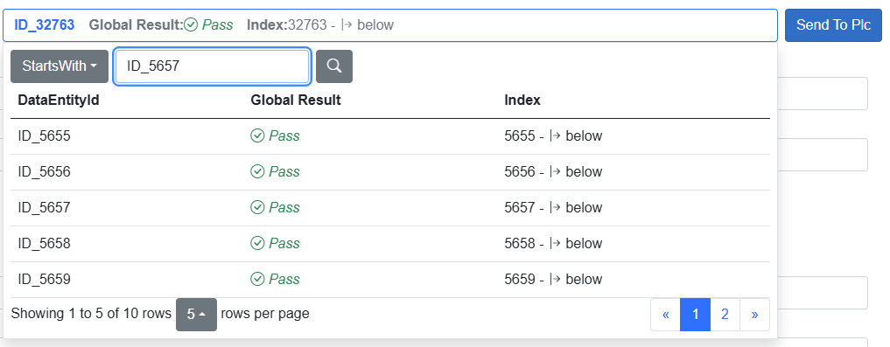
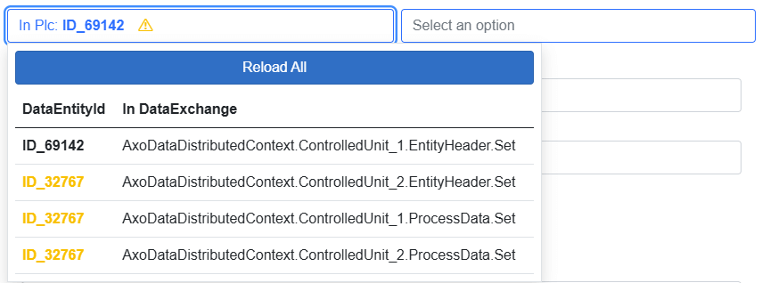

Distributed Data Selector
Enables sending data to a Data Exchange group consisting of multiple instances of AxoDataExchange.
As shown above, the left side displays the current EntityId in the PLC. On the right side, there's a button that allows you to select any available entity.
The selection button displays several columns of data defined for the main data exchange in the group. To define the main exchange for a group, use the following code in your Program.cs:
//Set up prioritized exchange type
distributedDataService.SetPrioritizedType(typeof(Pocos.AxoDataDistributedExample.SharedHeader_Data));
// sort all collected groups
distributedDataService.SortGroupsByPriorizedTypes();

The Send to PLC button writes data to all data exchange instances in the group.
Entity ID mismatch warning
If not all exchanges have the same EntityId, a yellow warning triangle is displayed.

Clicking the triangle opens the selection interface, allowing you to correct or review the entity assignments.